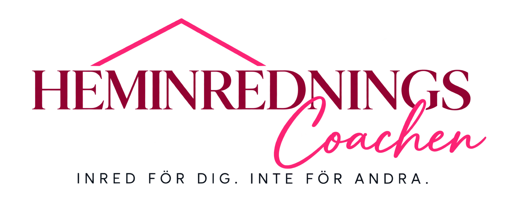
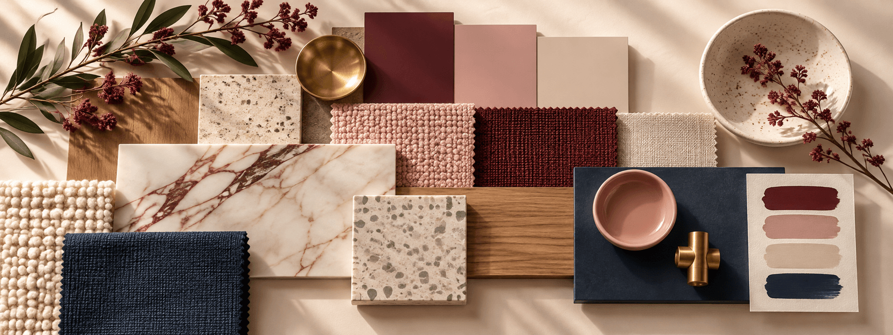
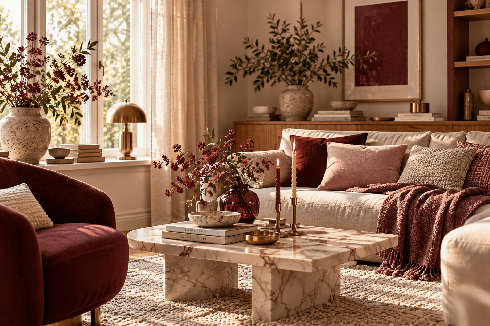

Stilstartaren
För dig som vill hitta din stil och skapa en tydligare röd tråd i hemmet.

ETT HEM SOM SPEGLAR DIG
Jag hjälper dig att skapa ett personligt och genomtänkt hem som fungerar för din vardag – utifrån hur du lever, vad du tycker om och hur du vill att det ska kännas att vara hemma.
Se hur jag kan hjälpa dig ↗Personlig inredning. Genomtänkta val.

DIN VARDAG ÄR UTGÅNGSPUNKTEN
Ditt hem är inte till för att imponera på andra. Det är till för dig och människorna du delar det med.
Därför tycker jag att inredning ska utgå från hur du faktiskt lever, vad du tycker om och vad du behöver i din vardag – inte från hur ett hem förväntas se ut.
Det handlar om att skapa ett hem som känns personligt, fungerar i vardagen och som du trivs med över tid.

HEM I BALANS
Ett hem ska inte bara vara fint att titta på. Det ska fungera för livet som pågår där.
Hem i balans handlar om att se hemmet som en helhet. Hur det ser ut är en del, men lika viktigt är hur det fungerar i vardagen och hur det känns att vara där.
Jag utgår från människorna som bor i hemmet – era behov, vanor och det ni redan har – och tittar på sådant som funktion, färg, ljus, material och andra sinnesintryck.
PERSONLIG INREDNINGSHJÄLP
Din stil. Din fråga. Ditt rum.
Här hittar du ett sätt att börja.
För dig som vill hitta din stil och skapa en tydligare röd tråd i hemmet.
För dig som har en specifik inredningsfråga och vill ha personlig rådgivning och konkreta råd för att komma vidare.
För dig som vill ha hjälp med helheten i ett rum – från stil, färg och material till möblering, belysning och produktval.
Hör av dig via mejl för mer information. Onlinebokning kommer längre fram.
MÄNNISKAN. MILJÖN. EKONOMIN.
Ett hem behöver inte följa med i varje trend. Det behöver kunna följa med i ditt liv.
För mig handlar hållbar inredning om att göra genomtänkta val och skapa ett hem som fungerar över tid. Att ta vara på det du redan har, välja med omsorg när något nytt behövs och tänka på både människan, miljön och ekonomin.
MÄNNISKAN BAKOM HEMINREDNINGSCOACHEN
Jag är utbildad inredare och projektledare inom möbel och inredning med inriktning mot hållbarhet.
För mig handlar inredning inte om att skapa ett perfekt hem. Vi ska ju leva där också. Jag vill hjälpa dig att skapa ett hem som speglar dig, fungerar för din vardag och som du trivs med över tid.
Jag börjar inte med vad du ska köpa. Jag börjar med vad du & ditt hem behöver.Låt oss prata om ditt hem ↗
LÄR DIG SJÄLV
Kunskap och konkreta verktyg för mer genomtänkta val.
Du behöver inte alltid anlita en inredare för att komma vidare med ditt hem. I mina kurser och guider får du kunskap och konkreta verktyg som hjälper dig att göra mer genomtänkta val på egen hand.
MINIKURS
Få hjälp att hitta din stil.
Fråga om minikursen ↗GUIDE
Hållbar inredning för människan, miljön och ekonomin.
Fråga om guiden ↗Vill du veta mer om innehåll och tillgänglighet? Hör av dig via mejl.
INSPIRATION & KUNSKAP
Här samlar jag inspiration, kunskap och konkreta råd om inredning – för dig som vill förstå mer och göra medvetna val i ditt eget hem.
Du kan läsa om allt från stil och personlighet och funktion i vardagen till hem och välbefinnande och hållbar inredning.
Artiklar och guider läggs till här längre fram.
VI BÖRJAR MED ETT HEJ
Berätta vad du funderar på så hittar vi ett sätt att börja.